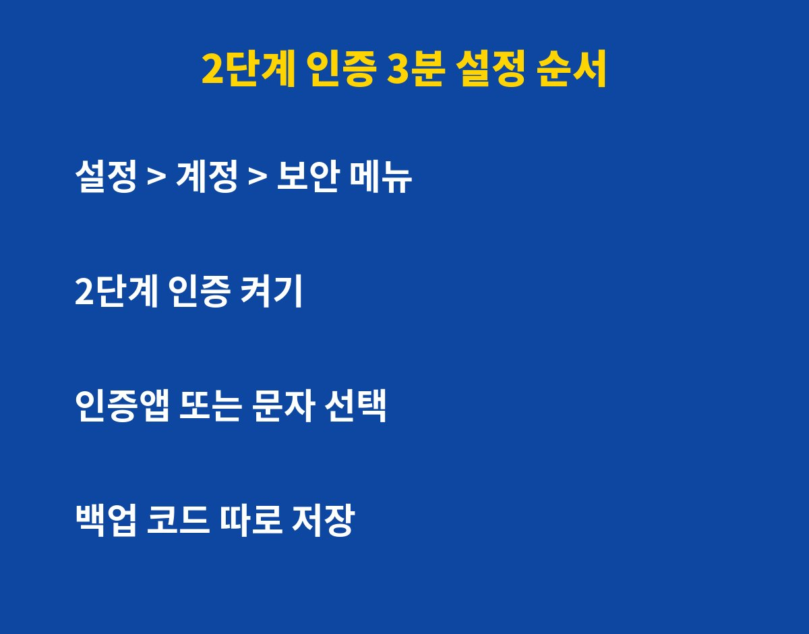
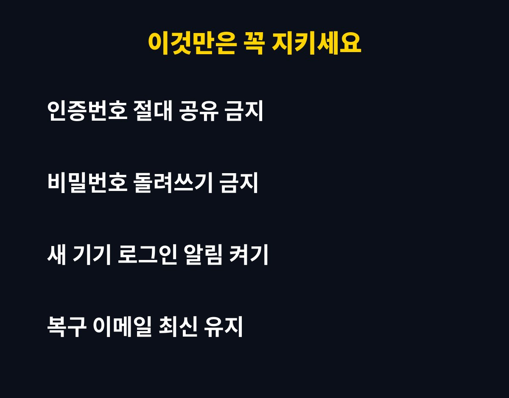

2단계 인증을 켜지 않은 계정은 비밀번호 하나만 알려져도 그대로 뚫리고, 켜는 데는 3분이면 충분해요. 네이버·카카오톡·구글을 쓴다면 대상이지만, 그런데 문자 인증만 믿고 있다면 오히려 더 위험할 수 있어요. 이유는 아래에 있어요.
2단계 인증, 안 켜면 정말 그렇게 위험할까요?
비밀번호는 다른 사이트에서 유출된 것을 그대로 가져다 쓰는 경우가 많아요. 여러 사이트에 같은 비밀번호를 쓰고 있다면 한 곳만 털려도 내 계정이 연쇄로 위험해져요.
2단계 인증은 비밀번호가 맞아도 한 번 더 확인을 요구하는 장치예요. 해커가 비밀번호를 알아도 내 폰에 오는 두 번째 확인이 없으면 로그인이 막혀요.
2단계 인증, 문자 인증 vs 인증앱, 뭐가 더 안전할까요?
문자 인증은 편하지만 번호 도용이나 문자 가로채기 같은 수법에 약할 수 있어요. 가능하면 인증앱이나 기기 승인 방식을 먼저 고르고, 문자는 보조 수단으로 두는 것이 좋아요.

| 방식 | 편의성 | 안전성 |
|---|
| 문자 인증 | 높음 | 보통 |
| 인증앱 | 보통 | 높음 |
| 보안키·기기 승인 | 보통 | 매우 높음 |
3분 설정, 어디서부터 해야 후회가 없을까요?
먼저 이메일 계정부터 켜세요. 이메일이 뚫리면 다른 모든 서비스의 비밀번호 재설정이 가능해지기 때문이에요. 그다음 네이버, 카카오, 구글, 금융 앱 순서로 진행하면 돼요.
설정 방법은 간단해요. 각 서비스의 설정에서 보안 또는 계정 메뉴로 들어가 2단계 인증을 켜고, 인증 방식을 고른 뒤 백업 코드를 따로 저장해 두면 끝이에요.

켜 놓고도 털리는 사람은 무엇이 다를까요?
인증번호를 전화나 메신저로 알려주는 순간 2단계 인증은 무용지물이 돼요. 공식 기관이든 지인이든 인증번호를 물어보면 완전히 의심하세요.
또 복구용 이메일과 전화번호가 예전 것으로 남아 있으면 정작 내가 잠겼을 때 못 들어가요. 오늘 한 번만 최신으로 바꿔 두세요.
오늘 3분만 투자하면 계정을 지킬 수 있어요. 도움이 되셨다면 구독해 두고 다음 생활 IT 꿀팁도 받아보세요.
2단계 인증 안 켠 계정 1순위로 털린다를 직접 확인한 내용을 바탕으로 핵심부터 차례대로 짚어 볼게요. 기사·공식 발표 기준이며 출시·가격 정보는 바뀔 수 있어요.